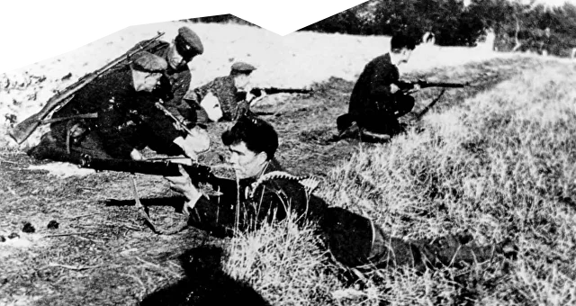
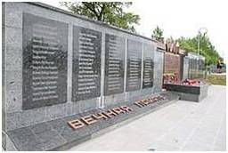
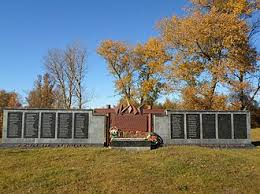

Жлобинщина в годы Великой Отечественной войны: Оккупация, Сопротивление и Память

Начало войны и оккупация
Система нацистского террора: концлагеря и гетто
Жлобин стал узлом разветвленной системы концлагерей, гетто и тюрем, созданной для уничтожения мирного населения и военнопленных.


Жлобинское гетто: Летом 1941 года всё еврейское население города (около 2-3 тысяч человек) было согнано в гетто. 3 декабря 1941 года гетто было ликвидировано, а все его узники были расстреляны в противотанковых рвах на окраине города. Сегодня на этом месте находится мемориал «Жертвам фашизма».

Мемориальный комплекс Красный Берег:является памятным и тронутым событиями местом, которое иногда называют «детской Хатынью». В 1943 году нацисты создали на территории учебного хозяйства в деревне Красный Берег концлагерь для детей-доноров в возрасте от 8 до 14 лет. Некоторых из них насильственно отправляли в Германию, а других распределяли по госпиталям в качестве доноров для раненых немецких солдат и офицеров. Всего для этой цели фашисты увезли 1990 детей.
![Концлагерь в Красном береге]()
Карательные операции и сожженные деревни
Ответом на растущее партизанское движение стали жесточайшие карательные операции, направленные на уничтожение целых деревень. В Жлобинском районе во времмя оккупации было сожжено 67 деревень, часть из них было восстановленна.
Антоновка(сентябрь 1943 года): с осени 1941 года действовала подпольная патриотическая группа (руководитель А. Л. Севостьянчик). Оккупанты сожгли 44 двора и убили 112 жителей. 43 жителя погибли на фронтах и в партизанской борьбе. Сейчас восстановлена.
Деревня Пиревичи: Была полностью уничтожена вместе с жителями. Десятки других деревень на Жлобинщине разделили эту страшную участь в ходе операций, подобных «Зимнему волшебству».
Деревня Белица: в 1930 году организован колхоз «Красная Белица». Оккупанты сожгли 32 двора, убили 8 жителей. 49 жителей погибли на фронтах. Восстановлена.
Деревня Большие Роги: в 1930 году организован колхоз. Во время Великой Отечественной войны оккупанты сожгли 16 дворов, убили 37 жителей. 45 жителей погибли на фронтах. Сейчас восстановлена и является окраиной Жлобина.
Деревня Солоное: В 1929 году организован колхоз «На карауле». В начале Великой Отечественной войны был создан истребительный отряд (27 человек). С 1942 года действовала подпольная патриотическая группа (руководитель П. С. Дегтярёв). Оккупанты сожгли 175 дворов и убили 55 жителей. На фронтах и в партизанской борьбе погиб 101 житель из деревень Солонского сельсовета.
В память о погибших в 1957 году в центре деревни установлена скульптурная композиция.

Память
Сегодня о тех страшных и героических годах напоминают многочисленные мемориалы: Братская могила в агрогородке Пиревичи, братские могила в Жлобине, и памятники на месте концлагеря в Красном береге и расстрелов.

Жлобинщина в годы войны стала символом как беспрецедентной жестокости оккупационного режима, так и несгибаемого мужества и стойкости белорусского народа. Это история, которую необходимо помнить, чтобы ужас тех лет никогда не повторился.